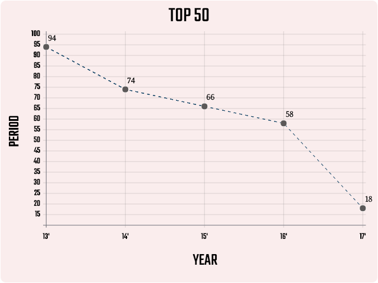
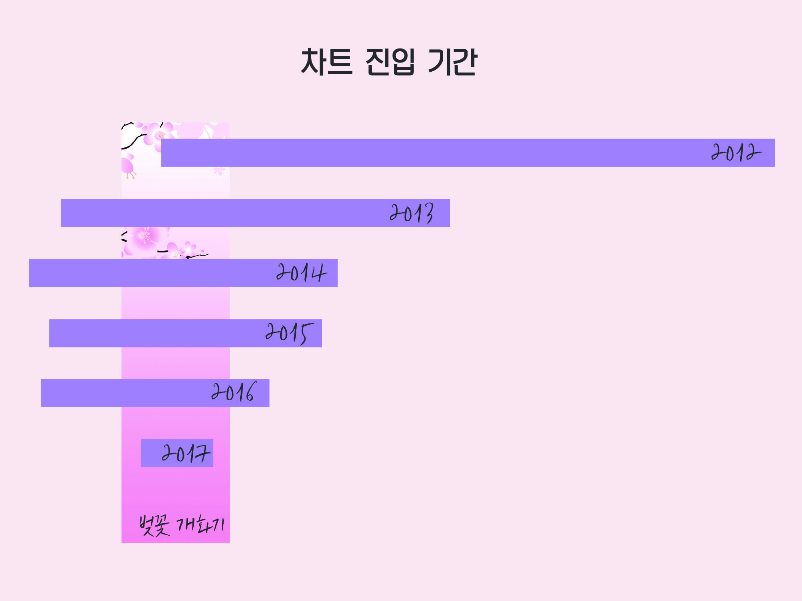

2012년 3월 벚꽃엔딩이 발매된 이후부터 2017년까지, 지니뮤직 일간 차트 50위 내의 노래를 분석했다. 지니뮤직은 국내 음원사이트 중 사용자 수가 두 번째로 많은 곳이라는 점에서, 그 순위를 통해 벚꽃엔딩의 대중적인 인기를 파악할 수 있다.
TOP50
 13'-17' in TOP50먼저 연도별로 일간 차트 50위 내에 벚꽃엔딩이 있었던 일자 수를 분석했다. 2013년에는 94일 동안 50위 내에 있었지만, 2017년에는 18일만 순위에 드는 등 시간이 지나면서 그 횟수는 지속적으로 감소했다.
그러나 2017년까지도 벚꽃엔딩이 지속적인 인기를 얻고 있었다는 점도 확인할 수 있다. 특히 요즘 가요계 순위 차트는 음원이 발매된 직후에 결정되며, 강력한 팬덤이 있는 가수들이 차지하는 경우가 많아 매년 차트 50위에 드는 것의 의미가 더 크다.
개화기와 차트 진입 시기
 Entering on the chart & Blossoming또한, 버스커버스커의 벚꽃엔딩이 일간 차트 50위에 들었던 일자가 언제인지를 분석했다. 그 결과 사람들이 벚꽃엔딩을 많이 듣는 시기가 봄과 밀접한 연관이 있다는 것을 알 수 있었다. 이때 벚꽃 개화기는 평균 벚꽃 개화기와 벚꽃 만개 기간에 대한 기상청의 자료를 토대로 3월 24일부터 4월 20일로 설정했다. 해가 지나면서 벚꽃엔딩이 50위 내에 들었던 기간은 줄었지만, 그 일자가 봄, 특히 벚꽃 개화기로 집중됐다는 점에서 대중이 벚꽃엔딩을 봄에 찾아 듣는다는 것을 확인할 수 있다.